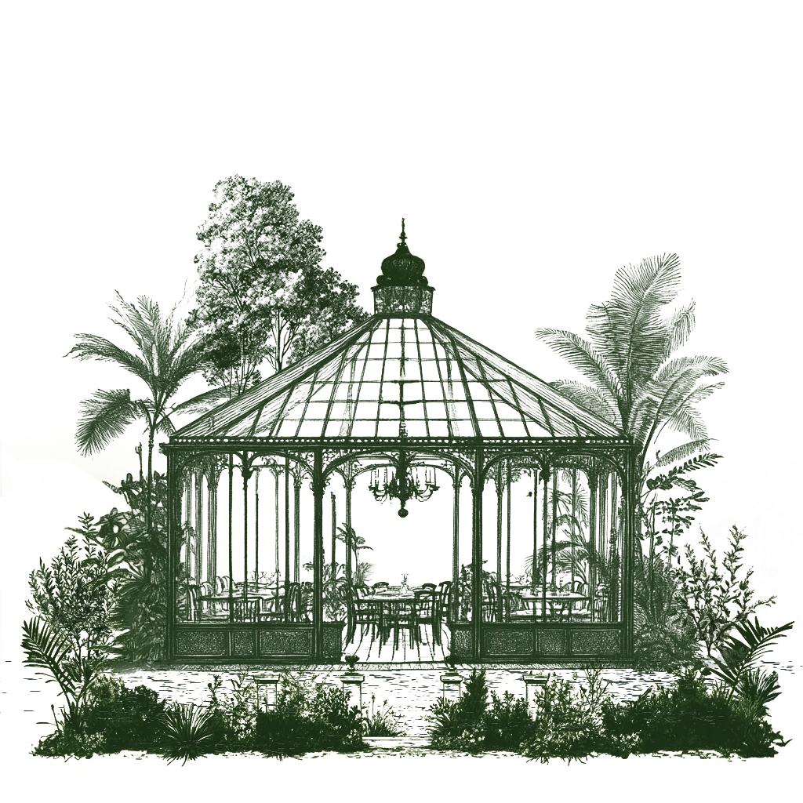
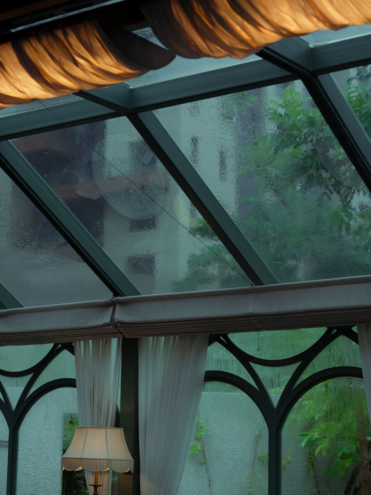
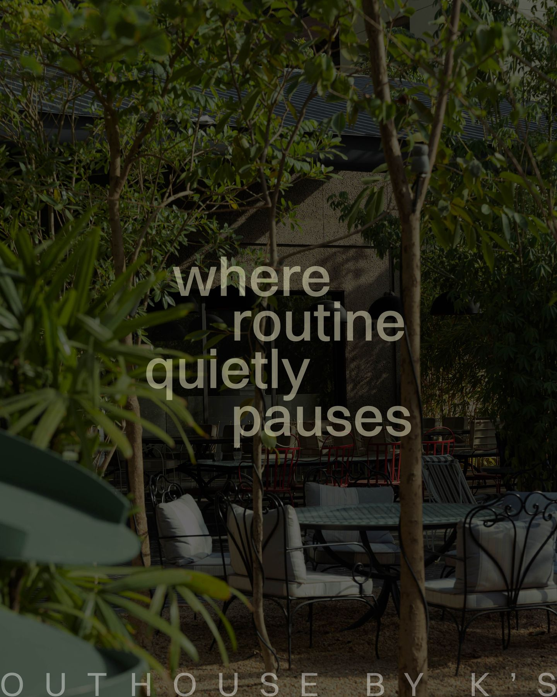
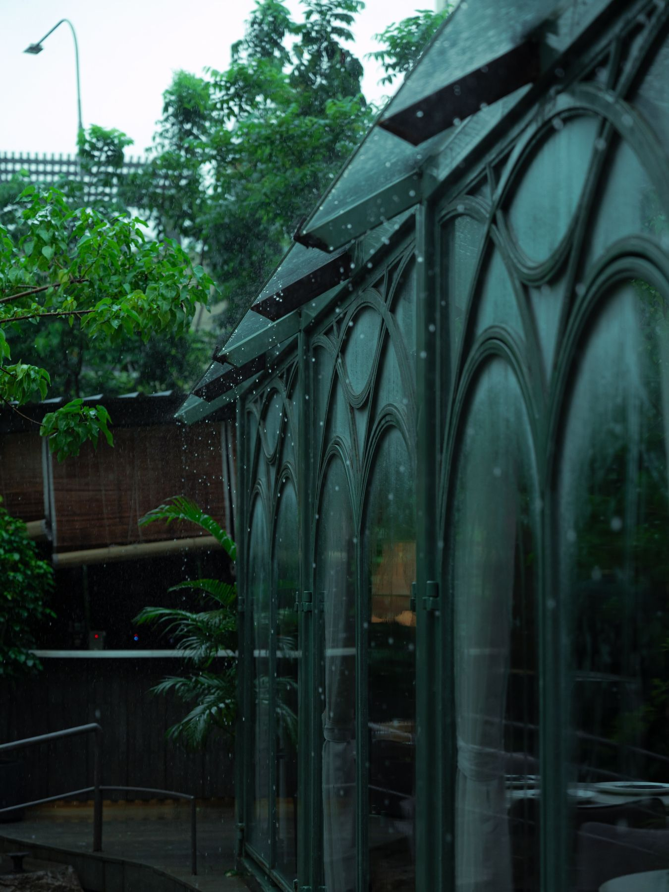
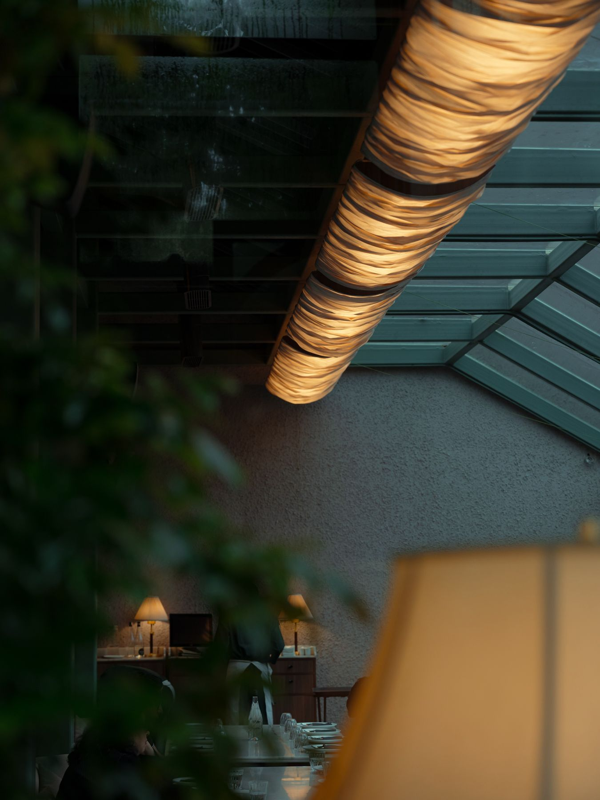
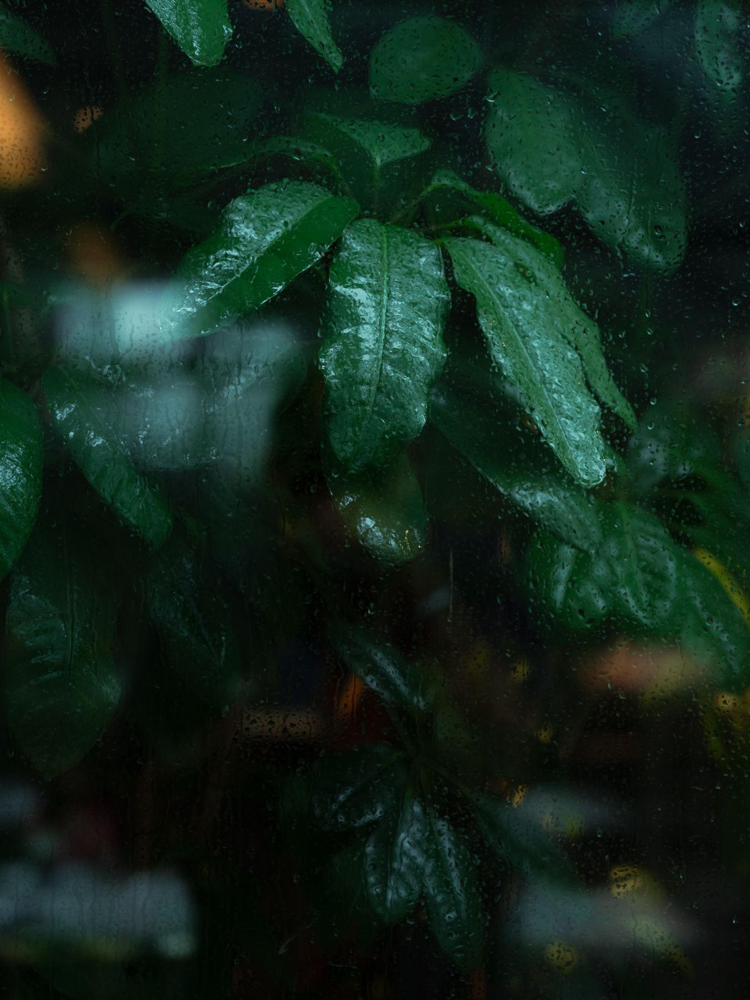
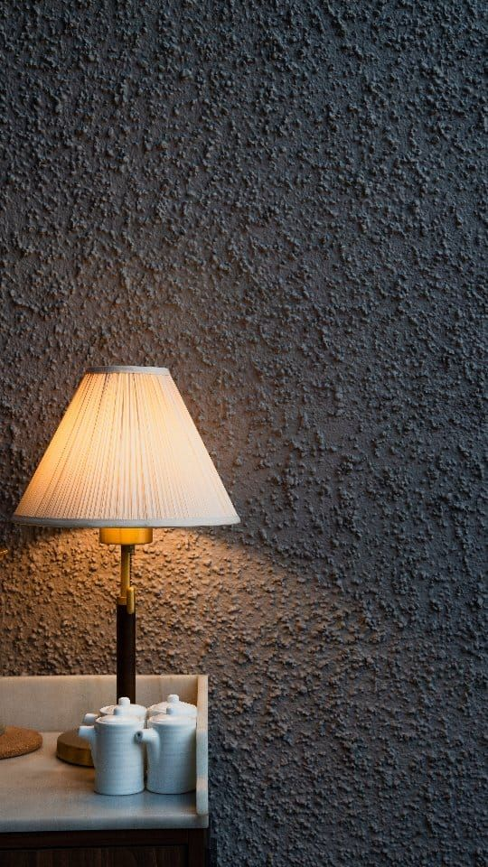
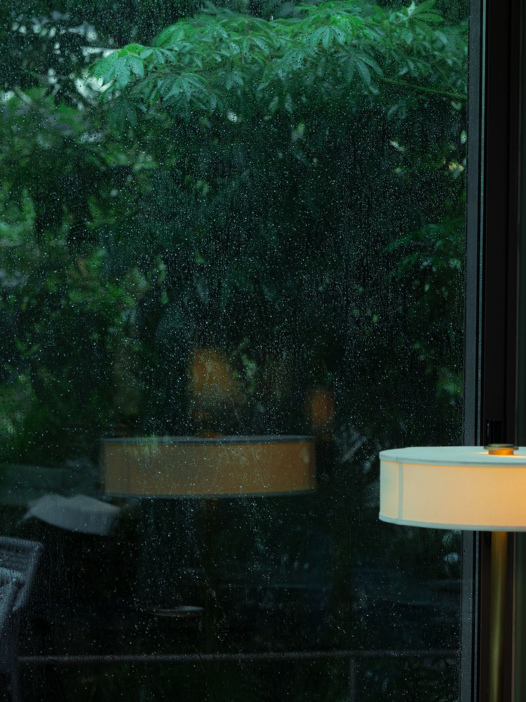
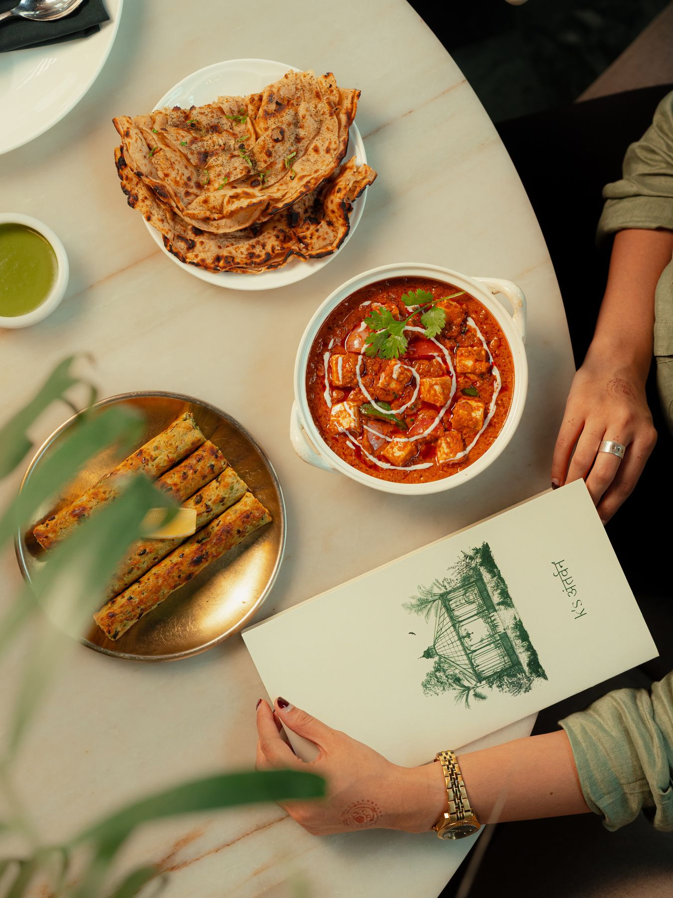

Inside and out
Two rooms
One has glass overhead. The other has leaves. Ask for either when you call — on a wet evening the glasshouse is the one everybody wants.
The glasshouse
Lamplight under a glass roof
Green steel ribs carry a pitched glass roof over the whole room. The glazing is arched, the drapes are sheer, the floor is chequerboard marble, and every table carries its own scalloped lamp.
Planting runs along the outside of the glass, so the view from any seat is leaves rather than road. When it rains, the water runs down the panes and the room turns into the best seat in Vesu.


The outhouse
A bench around a tree
Out back, a curved slatted bench wraps a tree trunk, green mosaic tabletops catch the light, and gravel keeps the whole thing quiet underfoot.
Bamboo and gulmohar close the garden in on every side; festoon lights come on as the afternoon goes. It is the room for long coffees, a book, and the kind of lunch that forgets to end.

Details
The things you’ll remember
Tap any photograph to see it large.





